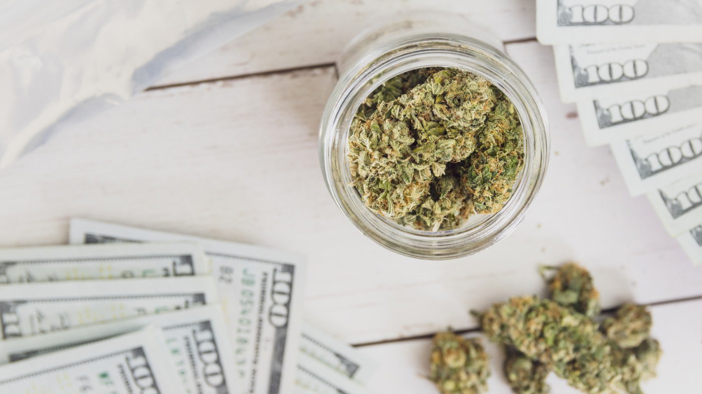

How Much Do Dispensaries Make in Colorado? A Comprehensive Guide

As one of the first states to legalize marijuana, Colorado has been a trailblazer in the cannabis industry. The state's dispensaries have been consistently generating high revenues since legalization, but how much do they really make? In this guide, we'll dive into the details of dispensary earnings in Colorado.
Average Dispensary Revenue in Colorado
According to a 2021 report from Marijuana Business Daily, the average annual revenue for a marijuana dispensary in Colorado is around $3 million. However, this number can vary depending on the location and size of the dispensary, as well as the quality and variety of products they offer.
Factors that Affect Dispensary Revenue
Several factors can impact a dispensary's revenue, including:
Location
Dispensaries located in high-traffic areas or tourist destinations are likely to generate more revenue than those in less busy locations.
Size
Bigger dispensaries with more space and higher product capacity have the potential to generate more revenue than smaller ones.
Quality of Products
Dispensaries that offer high-quality products, including flower, concentrates, and edibles, can often charge higher prices and generate more revenue.
The Economics of a Dispensary
While $3 million might sound like a significant amount of revenue, it's essential to consider the costs that dispensaries face. These can include:
Startup Costs
Opening a dispensary can be expensive, with costs ranging from $150,000 to $2 million, depending on the size and location of the business.
Compliance Costs
Dispensaries must comply with state regulations, which can include costly licensing fees, security measures, and product testing.
Taxation
Marijuana dispensaries in Colorado are subject to a state tax of 15%, in addition to local taxes and fees.
Conclusion
Dispensaries in Colorado generate an average revenue of $3 million, but this number can vary depending on various factors. It's important to consider the costs of running a dispensary, including startup costs, compliance costs, and taxation.
We hope that this guide has been helpful in understanding the earnings of dispensaries in Colorado. As the cannabis industry continues to grow and evolve, we can expect to see changes in revenue and profitability. In summary, our article provides a comprehensive guide to dispensary earnings in Colorado, including average revenue, factors that impact revenue, and the costs that dispensaries face.